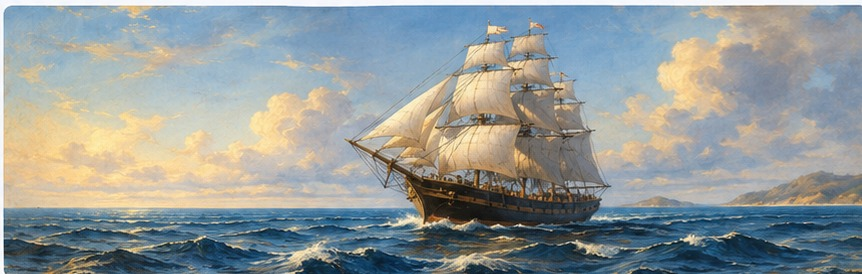

Todo es estirar y sumar Todo es combinación lineal
Álgebra Lineal
I
Espacio vectorial
Mundo de flechas que pueden sumarse y estirarse sin salirse.
II
Dependencia, generadores y bases
Lo que se alcanza estirando y sumando flechas.
III
Aplicación lineal
Puente entre dos espacios vectoriales.
La estructura del primero se refleja en el segundo.
Abrir en ventana nueva ↗
IV
Coordenadas
Tomar coordenadas de un vector desde una base.
Las componentes describen.
Las coordenadas localizan.
V
Matriz de una aplicación lineal
Entre dos bases.
La matriz representa la aplicación lineal entre ambas bases.
Abrir en ventana nueva ↗
VI
Ejercicios resueltos y mapas mentales
Consulta aquí los ejercicios y mapas en PDF.
⚓